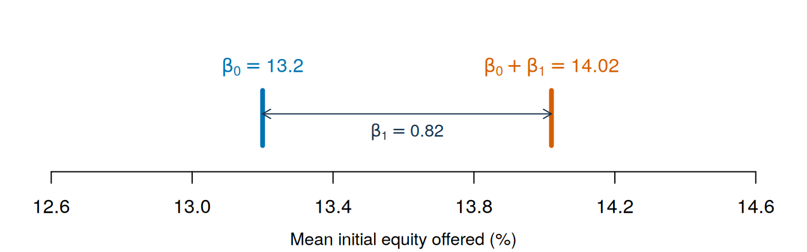
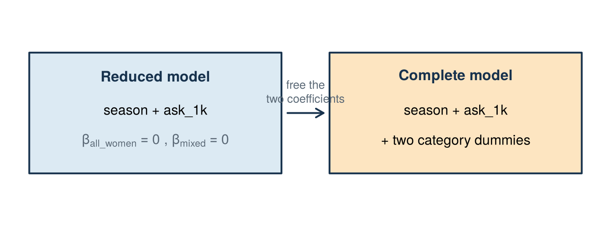
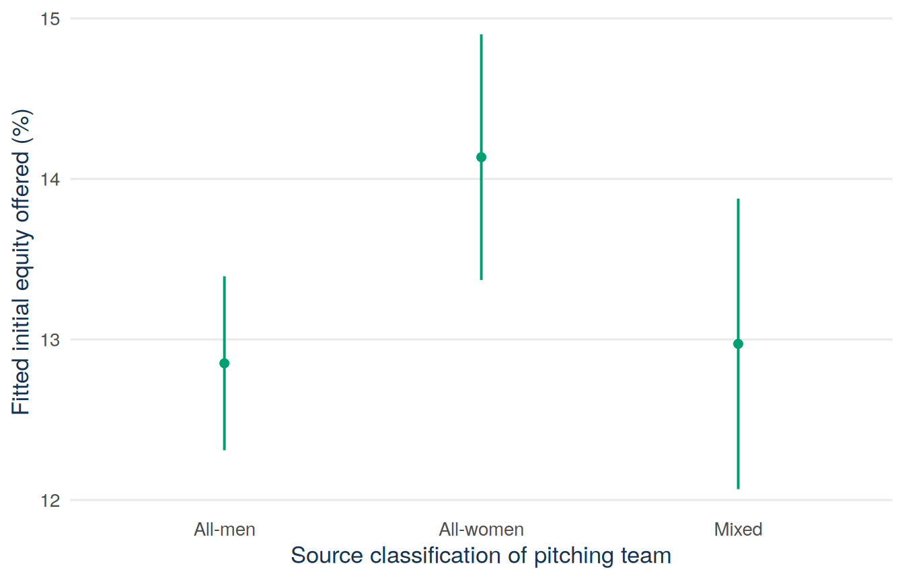

sharks <- read.csv("data/shark_tank_teaching.csv", stringsAsFactors = FALSE)
known_gender <- subset(sharks, pitcher_gender_group != "unknown")
known_gender$gender <- relevel(factor(known_gender$pitcher_gender_group),
ref = "all_men")
known_gender$ask_1k <- known_gender$ask_amount_usd / 1000
levels(known_gender$gender)
contrasts(known_gender$gender)Lecture 5: Categories as predictors and joint tests
By the end of Lecture 5, you can
- use dummy variables to put a categorical predictor into a regression
- interpret dummy coefficients as differences from a named reference category
- test whether a group of terms is jointly significant, and whether group means differ in a one-way ANOVA
- tell an adjusted comparison between groups apart from the effect that an A/B test estimates
Driving question
Many business variables are categories: sales channels, customer segments, kinds of teams. This lecture shows how to put categories into a model and how to judge whether they belong in it.
At the same season and requested amount, do all-women presenting teams offer a different equity (equity_offered_pct) than all-men teams in the Shark Tank file? And do the category terms improve the model at all?
Before class
Do all the preparation below before class.
Video preparation
Watch Stanford Statistical Learning 3.5 Extensions of the Linear Model. Focus on predictors that are categories (the video calls them qualitative predictors) and on how the reference category decides what a coefficient means. All links are also listed in the External Video Guide. The videos explain key ideas in another way and can use a different notation. The lecture material and its notation always come first.
Warm up and predict. The Shark Tank file sorts the presenting teams into three categories: all_men, all_women, and mixed. The video explains dummy variables, which take only the values 0 and 1. How many dummy variables does a model with an intercept need for three categories? Write down a number. Then answer this question before you come to class: at the same season and requested amount, do you expect all-women teams to offer more, less, or about the same equity as all-men teams? You will find both answers in the lecture material.
R warm-up. The code below builds the subset of pitches and the factor that the lecture material uses. Run the code and bring the contrasts table that it prints to class:
Code along (bring your laptop). Bring a charged laptop with RStudio and the course project open. All the code of the lecture is in this chapter, ready to copy. You can run each step yourself during the lecture and get the same numbers and figures.
If indicators and reference categories are unfamiliar, review Mathematics Refresher: indicators and reference categories.
Lecture material
This section first compares the groups of teams with plain averages. It then shows how a regression uses a variable made of categories, how to analyse an A/B test, and how to test several coefficients at once.
Start with a founder’s question
Founders often compare groups: customers from the app against customers from the website, one price against another, one kind of team against another. Start with the comparison in the driving question. The Shark Tank file sorts the presenting teams into all men, all women, and mixed (pitcher_gender_group). What equity (equity_offered_pct) did each group offer on average?
sharks <- read.csv("data/shark_tank_teaching.csv", stringsAsFactors = FALSE)
known <- subset(sharks, pitcher_gender_group != "unknown")
round(tapply(known$equity_offered_pct, known$pitcher_gender_group, mean), 2) all_men all_women mixed
13.20 14.02 12.17 table(known$pitcher_gender_group)
all_men all_women mixed
773 385 276 All-men teams offered 13.20% on average, all-women teams 14.02%, and mixed teams 12.17%. The difference between all-women and all-men teams is 0.82 percentage points, about 6% of the all-men average. Three questions follow. Is this difference larger than chance alone would produce? Does it remain when we compare teams from the same season that asked for the same amount? And how can lm() use a variable that contains words, not numbers?
Measurement first: what the category records
Stanford explanation (review): 3.5 Extensions of the Linear Model.
The categories describe the people who presented on screen: all men, all women, or mixed. They do not record the share of women in a team, and they do not describe the full team behind the venture. In seven records the source classifies the team as unknown. We leave these records out of every model in this lecture. A later section of this lecture explains why. Keep these limits in mind for every result in this chapter.
A two-level indicator
Definition
Dummy variable. A variable that takes only the values 0 and 1. It is 1 when an observation belongs to a category and 0 when it does not. Other names are indicator variable and binary variable. A dummy stands in for a category, so that the category can enter a regression as a number.
Reference category. The category for which all dummies are 0. Every dummy coefficient is a comparison with this category. Other names are reference group and base group.
The question at the start of this lecture was how lm() can use a variable that contains words. The answer is a dummy. For example, a dummy for all-women teams is 1 for a pitch by an all-women team and 0 for every other pitch. The words become numbers, and the regression can use them. You met a dummy in Lecture 1 as a predictor that is 0 or 1. This lecture shows how to use one or more dummies for a categorical variable.
For a dummy variable \(D_i\in\{0,1\}\),
\[ E[Y_i\mid D_i]=\beta_0+\beta_1D_i. \]
Then
\[ E[Y_i\mid D_i=0]=\beta_0, \qquad E[Y_i\mid D_i=1]=\beta_0+\beta_1. \]
So \(\beta_1\) is the expected difference between the group with \(D=1\) and the reference category with \(D=0\). A regression on one dummy is the same as a comparison of two group means.
Example 5.1 (Worked example: two group means from two coefficients) Keep only the all-men and all-women teams (1,158 records) and let women_team equal 1 for all-women teams:
sharks <- read.csv("data/shark_tank_teaching.csv", stringsAsFactors = FALSE)
known_gender <- subset(sharks, pitcher_gender_group != "unknown")
two_groups <- subset(known_gender,
pitcher_gender_group %in% c("all_men", "all_women"))
two_groups$women_team <- as.integer(
two_groups$pitcher_gender_group == "all_women"
)
coef(lm(equity_offered_pct ~ women_team, data = two_groups))(Intercept) women_team
13.1973739 0.8210677 tapply(two_groups$equity_offered_pct, two_groups$women_team, mean) 0 1
13.19737 14.01844 Read the two coefficients as two marks on the equity axis (Figure 15.1). The intercept \(\hat\beta_0\approx 13.20\) is the mean of the all-men teams. The sum \(\hat\beta_0+\hat\beta_1\approx 13.20+0.82=14.02\) is the mean of the all-women teams. The coefficient \(\hat\beta_1\approx 0.82\) is the distance between the two marks: the difference between the two group means.
See the R code for this figure
old_par <- par(no.readonly = TRUE)
par(mar = c(3.5, 1, 1, 1))
plot(NA, xlim = c(12.6, 14.6), ylim = c(0, 1), axes = FALSE,
xlab = "", ylab = "")
axis(1, at = seq(12.6, 14.6, by = 0.4))
mtext("Mean initial equity offered (%)", side = 1, line = 2.4, cex = 0.9)
segments(13.20, 0.15, 13.20, 0.55, col = "#0072B2", lwd = 4)
segments(14.02, 0.15, 14.02, 0.55, col = "#D55E00", lwd = 4)
arrows(13.20, 0.38, 14.02, 0.38, length = 0.08, code = 3, col = "#17324D")
text(13.20, 0.72, expression(hat(beta)[0] == 13.20), col = "#0072B2")
text(14.02, 0.72, expression(hat(beta)[0] + hat(beta)[1] == 14.02), col = "#D55E00")
text(13.61, 0.25, expression(hat(beta)[1] == 0.82), col = "#17324D", cex = 0.9)
par(old_par)
Comparing two versions: the A/B test
An invented example. A student venture sells meal-prep boxes through its website. The team has designed a new checkout page that suggests a drink with every box. Should the venture switch to the new page? The founders want to know whether the new page raises the order value, and by how much.
One idea is to compare the orders of last month (old page) with the orders of this month (new page). But other things also change from one month to the next: exams, the weather, the prices of competitors. The difference would mix the effect of the page with all of these. An A/B test avoids this problem.
Definition
A/B test. A randomised experiment with two groups. The treatment group gets the new version (B), and the control group gets the current version (A). With random assignment, chance decides which customer gets which version. The outcome \(Y_i\) is what you measure for each customer, such as the order value. The treatment dummy \(D_i\) is 1 for the treatment group and 0 for the control group.
Random assignment is the key step. Chance decides who sees the new page. So the budget, the taste, or the device of a customer cannot decide it. On average, the two groups are then alike in everything else, in what you measure and in what you do not measure. The only systematic difference between them is the page. So the difference in the mean outcomes estimates the average effect of the new page on the order value. This is called the average treatment effect.
Compare this with the Shark Tank comparisons of this lecture. Nobody assigned the gender of a team by chance. Teams of different composition can also differ in industry, experience, or product. The regression later in this lecture holds season and requested amount fixed, but not these other differences. That is why the coefficients of this lecture are adjusted comparisons, not effects. You met the same contrast in QM Basic Lecture 7: random sampling lets a sample represent a population, and random assignment supports claims about cause. An A/B test uses random assignment.
Analyse an A/B test with the regression on one dummy from the previous section:
\[ Y_i=\beta_0+\beta_1D_i+\varepsilon_i. \]
As shown above, \(\hat\beta_0\) is the mean outcome of the control group, and \(\hat\beta_0+\hat\beta_1\) is the mean outcome of the treatment group. So \(\hat\beta_1\) is the difference in means: treatment group minus control group. Two tools from the exam procedure of Lecture 3 answer the two questions of the founders:
- Does the new version have an effect? Test \(H_0:\beta_1=0\) against \(H_1:\beta_1\ne0\) with the t-test in five steps.
- How large is the effect? Give the 95% confidence interval for \(\beta_1\).
This is the comparison of two means that QM Basic Lecture 10 only previewed. The regression gives the same estimate, the difference between the two group means, and it adds the standard error, the test, and the interval in one table.
Example 5.2 (Worked example: an A/B test of a checkout page) An invented example. The venture runs the test with 200 new customers. Chance puts 100 customers in each group. The code below builds the invented data. It sets a true effect of 2 euros, which a real founder never knows.
set.seed(12)
# random assignment: 100 zeros (old page) and 100 ones (new page),
# shuffled by chance
new_page <- sample(rep(c(0, 1), each = 100))
# invented order values in euros, with a true effect of 2 euros
order_value <- round(25 + 2 * new_page + rnorm(200, mean = 0, sd = 6), 2)
ab_test <- data.frame(new_page, order_value)
head(ab_test) new_page order_value
1 1 28.20
2 0 19.88
3 0 19.62
4 0 23.85
5 1 22.72
6 0 19.35table(ab_test$new_page)
0 1
100 100 Now regress the order value on the treatment dummy new_page:
ab_model <- lm(order_value ~ new_page, data = ab_test)
summary(ab_model)$coefficients Estimate Std. Error t value Pr(>|t|)
(Intercept) 24.832 0.5650730 43.944765 4.483525e-104
new_page 2.042 0.7991339 2.555266 1.136150e-02confint(ab_model) 2.5 % 97.5 %
(Intercept) 23.717666 25.946334
new_page 0.466094 3.617906tapply(ab_test$order_value, ab_test$new_page, mean) 0 1
24.832 26.874 qt(0.975, df = 198)[1] 1.972017The intercept \(\hat\beta_0\approx 24.83\) euros is the mean order value of the control group. The treatment group has a mean of 26.87 euros. The coefficient \(\hat\beta_1\approx 2.04\) euros is the difference, with a standard error of 0.80.
The test in five steps.
Hypotheses. \(H_0:\beta_1=0\), the new page has no effect on the mean order value. \(H_1:\beta_1\ne0\). The significance level is 5%.
Test statistic. \(T=\hat\beta_1/\operatorname{SE}(\hat\beta_1)\), with
\[ df=n-k-1=200-1-1=198. \]
Critical value and rejection region. The critical value is 1.972, from
qt(0.975, df = 198). Reject \(H_0\) if \(|t_{obs}|\ge 1.972\).Observed value. \(t_{obs}=2.042/0.799\approx 2.56\).
Conclusion. \(2.56\ge1.972\), so reject \(H_0\) (p \(\approx\) 0.011). At the 5% level, the new page raises the mean order value.
The 95% interval for \(\beta_1\) in five parts.
- Formula. \(\hat\beta_1\pm t_{0.975,\,df}\,\operatorname{SE}(\hat\beta_1)\).
- Given values. \(\hat\beta_1=2.042\), \(\operatorname{SE}(\hat\beta_1)=0.799\), \(df=198\), and \(t_{0.975,\,198}=1.972\).
- Calculations. The margin of error is \(1.972\times0.799\approx1.576\).
- Interval. \(2.042\pm1.576\), from about 0.47 to 3.62 euros.
- Conclusion. With 95% confidence, the new page raises the mean order value by between about 0.47 and 3.62 euros. The interval lies above 0, which agrees with the test.
The interval contains the true effect of 2 euros that the code built in. To judge the size, compare the estimate with the mean of the control group:
ab_coef <- coef(ab_model)
round(100 * ab_coef["new_page"] / ab_coef["(Intercept)"], 1) # effect, % of control meannew_page
8.2 round(100 * confint(ab_model)["new_page", ] / ab_coef["(Intercept)"], 1) 2.5 % 97.5 %
1.9 14.6 The new page raises the order value by about 8.2% of the control mean. The interval runs from about 1.9% to 14.6%. Even the lower end is a gain. If the new page costs nothing extra to run, the decision is to switch to it.
An A/B test also has limits.
- The result holds for the customers and the period of the test. Customers in another season, or another kind of customer, may react differently.
- Each group needs enough customers. With few customers per group, the interval is wide, and a real effect can go unnoticed.
- Each customer must see only one version. A customer who sees both versions belongs to neither group.
- Testing many versions or many outcomes needs care. With many tests at the 5% level, some will reject by chance alone, even if no version has an effect.
When you may use causal words
Since Lecture 1 you describe a coefficient with “is associated with” and “on average”. You do not use causal words such as “increases”, “raises”, “leads to”, or “the effect of”. This stays the default in this course. Most data in business are observational: nobody decided by chance who got what. Then a coefficient mixes the role of the predictor with the role of everything that goes with it, measured or not. Control variables remove only the part that you measured.
A well-run A/B test is the exception. Here causal words are correct, because the way the data were produced rules out the other explanations. Check three conditions before you use them:
- Random assignment. Chance decided which customer got which version. The customers did not choose it, and neither did the team.
- One difference. During the test, the two groups had the same period, the same prices, and the same website, apart from the version you test.
- Same measurement. You measured the outcome in the same way and over the same time in both groups, and every customer kept the version assigned.
If all three hold, the difference in means estimates the average treatment effect. You may then write “the new page raises the mean order value”. If one condition fails, go back to the default wording. An example: the customers chose between the old and the new page themselves. Customers who like extras may pick the new page and also order more. Then the comparison is observational again.
Compare two sentences about the same question:
- Observational data, towns with and without free delivery: “Orders in towns with free delivery are on average 2 euros higher.” This is an association. The towns may differ in more than delivery.
- A/B test, free delivery assigned by chance to customers: “Free delivery raises the mean order value by about 2 euros.” This is a causal claim.
The limits above still apply to a causal claim. It holds for the customers and the period of the test. It is also an average: it does not say that every customer orders more.
More than two categories
With \(G\) categories and an intercept, use \(G-1\) dummies. With all \(G\) dummies and an intercept, the dummies sum to 1 in every row, which is the same as the intercept column. This is perfect multicollinearity from Lecture 4: one column can be calculated exactly from the others, so R cannot estimate all the coefficients. With dummies, this situation is sometimes called the dummy variable trap.
R creates the dummies itself when a predictor is a factor. Choose the reference category yourself and check it. This is the code of the R warm-up:
known_gender$gender <- relevel(factor(known_gender$pitcher_gender_group),
ref = "all_men")
known_gender$ask_1k <- known_gender$ask_amount_usd / 1000
levels(known_gender$gender)[1] "all_men" "all_women" "mixed" contrasts(known_gender$gender) all_women mixed
all_men 0 0
all_women 1 0
mixed 0 1Each row of the contrasts table is a category. Each column is one dummy. The reference category all_men is the row with only zeros. The intercept belongs to this category. This answers the first question from before class: three categories need two dummies.
Check: four industries and an intercept, how many dummies?
Three. One industry is the reference category, and the intercept belongs to this category. Each of the three dummy coefficients compares one of the other industries with it. Four dummies and an intercept would give perfect multicollinearity.
Try it: three sales channels
Try this with your neighbour first. In an invented example, a venture sells through three channels: the campus stand, the app, and the website. A model of the order value in euros uses the campus stand as the reference and reports channelApp 6.0 and channelWebsite 2.5, with an intercept of 9.0.
Step 1 (given). With three categories and an intercept, the model needs two dummies. The campus stand has no dummy. Its mean is the intercept.
Step 2 (you). Give the fitted mean order value for each of the three channels.
Step 3 (you). By how much does the fitted order value in the app differ from the fitted order value on the website? Neither is the reference category.
Check your answer
Campus stand: 9.0 euros. App: 9.0 + 6.0 = 15.0 euros. Website: 9.0 + 2.5 = 11.5 euros. App minus website: 6.0 - 2.5 = 3.5 euros. You can subtract two coefficients that share a reference category from each other. The result compares their two categories directly.
Percent versus percentage points
The outcome equity_offered_pct is measured in percent, so its regression coefficients are in percentage points. The model in the next section estimates a coefficient of 1.28 for all-women teams. The sentence “the all-women coefficient is 1.28%” would be ambiguous. It could mean:
- a relative change: 1.28% of the all-men level more (13.2% would become about 13.4%)
- an absolute change of 1.28 percentage points (13.2% would become 14.48%).
The two readings differ by a factor of about eight here. A coefficient for an outcome in percent is always an absolute change in percentage points. The precise sentence is: “At the same season and requested amount, all-women presenting teams are fitted to offer 1.28 equity percentage points more than all-men presenting teams.” Always write percentage points for this outcome.
The adjusted comparison
Now fit the model of the driving question. It contains both category dummies, and it holds season and requested amount (in thousands of dollars, ask_1k) fixed.
gender_model <- lm(
equity_offered_pct ~ season + ask_1k + gender,
data = known_gender
)
summary(gender_model)
Call:
lm(formula = equity_offered_pct ~ season + ask_1k + gender, data = known_gender)
Residuals:
Min 1Q Median 3Q Max
-16.118 -4.778 -1.100 3.220 82.590
Coefficients:
Estimate Std. Error t value Pr(>|t|)
(Intercept) 20.8388333 0.5064929 41.143 < 2e-16 ***
season -0.8238940 0.0477959 -17.238 < 2e-16 ***
ask_1k -0.0026613 0.0005822 -4.571 5.28e-06 ***
genderall_women 1.2835231 0.4810241 2.668 0.00771 **
gendermixed 0.1209343 0.5411539 0.223 0.82320
---
Signif. codes: 0 '***' 0.001 '**' 0.01 '*' 0.05 '.' 0.1 ' ' 1
Residual standard error: 7.612 on 1429 degrees of freedom
Multiple R-squared: 0.1913, Adjusted R-squared: 0.189
F-statistic: 84.49 on 4 and 1429 DF, p-value: < 2.2e-16Interpret both dummy coefficients with a full sentence. Each sentence names the two categories, the unit, the predictors that are held fixed, and the records it is about:
- All-women versus all-men. Among the 1,434 pitches with a known team classification, all-women presenting teams are fitted to offer about 1.28 equity percentage points more than all-men presenting teams at the same season and requested amount (p \(\approx\) 0.008).
- Mixed versus all-men. Among the same pitches, mixed teams are fitted to offer about 0.12 percentage points more than all-men teams at the same season and requested amount (p \(\approx\) 0.823). This estimate is not statistically distinguishable from zero.
The first sentence answers the prediction question from before class: all-women teams offer more. The adjusted difference between all-women and all-men teams (1.28 points) is larger than the unadjusted difference from the worked example (0.82 points). Holding season and requested amount fixed changed the comparison. This is why the sentence must name what is held fixed. Both coefficients are comparisons with the reference category. They do not show that the gender of a team causes the offer.
Changing the reference category changes the names and values of the coefficients. It does not change the fitted values or the overall fit. Check this in R:
known_gender$gender_women_ref <- relevel(known_gender$gender,
ref = "all_women")
coef(lm(equity_offered_pct ~ season + ask_1k + gender_women_ref,
data = known_gender)) (Intercept) season ask_1k
22.122356419 -0.823893957 -0.002661283
gender_women_refall_men gender_women_refmixed
-1.283523102 -1.162588850 The same three fitted group means are now described as comparisons with the all-women teams. The all-men coefficient is \(-1.28\), the same difference as before with the opposite sign, and the fitted values are identical.
Are the category terms worth having at all?
So far we read the coefficients one at a time. The driving question also asks something that no single t-test answers: do the two category terms together add information beyond season and requested amount?
Definition
Partial F-test (F-test for joint significance). A test of whether several coefficients are all zero at the same time. It compares a complete model with a reduced model that leaves out the tested terms. Econometrics textbooks call these two models the unrestricted and the restricted model. Both models are fitted on the same observations.
\[ F=\dfrac{(\text{SSE}_R-\text{SSE}_C)/q}{\text{SSE}_C/(n-k_C-1)}, \]
with \(\text{SSE}_R\) and \(\text{SSE}_C\) the sums of squared residuals of the reduced and the complete model, \(q\) the number of tested coefficients, and \(k_C\) the number of slopes of the complete model.
Two such models are called nested: the reduced model is the complete model with the tested coefficients set to zero. Figure 15.2 shows the pair for the two category dummies.
See the R code for this figure
old_par <- par(no.readonly = TRUE)
par(mar = c(0.3, 0.3, 0.3, 0.3))
plot(NA, xlim = c(0, 10), ylim = c(0, 5), axes = FALSE,
xlab = "", ylab = "", xaxs = "i", yaxs = "i")
rect(0.4, 1.1, 4.6, 3.9, col = "#DCEAF3", border = "#17324D", lwd = 2)
rect(5.4, 1.1, 9.6, 3.9, col = "#FDE5C1", border = "#17324D", lwd = 2)
text(2.5, 3.35, "Reduced model", font = 2, col = "#17324D")
text(2.5, 2.55, "season + ask_1k", cex = 0.95)
text(2.5, 1.85, expression(beta["all_women"] == 0 ~ "," ~ beta["mixed"] == 0),
cex = 0.95, col = "#5B6976")
text(7.5, 3.35, "Complete model", font = 2, col = "#17324D")
text(7.5, 2.55, "season + ask_1k", cex = 0.95)
text(7.5, 1.85, "+ two category dummies", cex = 0.95)
arrows(4.7, 2.5, 5.3, 2.5, length = 0.1, lwd = 2, col = "#17324D")
text(5.0, 3.0, "free the\ntwo coefficients", cex = 0.8, col = "#5B6976")
par(old_par)
The hypotheses:
\[ H_0:\beta_{\text{all\_women}}=\beta_{\text{mixed}}=0 \quad\text{against at least one non-zero.} \]
Example 5.3 (Worked example: the partial F statistic by hand) Fit both models and ask R for the anova table:
reduced_gender <- lm(equity_offered_pct ~ season + ask_1k,
data = known_gender)
anova(reduced_gender, gender_model)Analysis of Variance Table
Model 1: equity_offered_pct ~ season + ask_1k
Model 2: equity_offered_pct ~ season + ask_1k + gender
Res.Df RSS Df Sum of Sq F Pr(>F)
1 1431 83228
2 1429 82792 2 436.25 3.7649 0.0234 *
---
Signif. codes: 0 '***' 0.001 '**' 0.01 '*' 0.05 '.' 0.1 ' ' 1Now calculate F by hand from the numbers in the table. The residual sum of squares (RSS in the R output, SSE in this course) falls by \(436.25\) when you add the two category terms. This uses \(2\) degrees of freedom. The complete model leaves a residual sum of squares of \(82{,}792\) on \(1{,}429\) degrees of freedom:
\[ F=\frac{436.25/2}{82{,}792/1{,}429} =\frac{218.13}{57.94} \approx 3.76. \]
Read the ratio. The numerator is the variation that the two terms explain, per tested coefficient. The denominator is the variation that is left unexplained, per residual degree of freedom. If the two coefficients were really zero, the ratio would be close to 1. Here it is about 3.8, and the p-value is about 0.023.
At 5%, the two category terms are jointly significant in this model. Compare this with the single results: the p-value of the joint test is \(0.023\), and the p-value of the mixed dummy alone is \(0.823\). Joint significance is not the same as individual significance. The F-test asks whether the two terms together improve the model. It does not ask whether each term is significant on its own. The overall F-test in summary(gender_model) is about 84.5, with a very small p-value. It answers a third question: do all four coefficients together improve on a model with only an intercept?
The same model as a one-way ANOVA
Take away season and requested amount for a moment. Then the only predictors are the dummies of one categorical variable. Such a regression compares group means, and it has its own name.
Definition
One-way analysis of variance (ANOVA). A regression of the outcome on the dummies of one categorical variable with \(G\) groups, and nothing else. It compares the \(G\) group means. Its F-test has the null hypothesis that all group means are equal, against the alternative that at least one differs.
In this model each fitted value is the mean of the group of the observation. Write \(\bar y_g\) for the mean of group \(g\), \(n_g\) for its number of observations, and \(\bar y\) for the overall mean. The intercept is the mean of the reference category. Each dummy coefficient is the difference between the mean of its group and the mean of the reference category.
The variation splits as in Lecture 3, \(\text{SST}=\text{SSR}+\text{SSE}\). Put the group mean \(\bar y_g\) in place of the fitted value \(\widehat y_i\). Then SSR measures the variation between the groups: how far the group means lie from the overall mean, weighted by the size of each group. SSE measures the variation within the groups: how far each observation lies from the mean of its own group.
\[ \text{SSR}=\sum_{g=1}^{G}n_g(\bar y_g-\bar y)^2, \qquad \text{SSE}=\sum_{g=1}^{G}\ \sum_{i\text{ in group }g}(y_i-\bar y_g)^2. \]
The model has \(k=G-1\) slopes, so the residual degrees of freedom are \(n-k-1=n-G\). The F statistic of the ANOVA is
\[ F=\frac{\text{SSR}/(G-1)}{\text{SSE}/(n-G)}. \]
This is the overall F-test of Lecture 3 for the dummy regression. Its null hypothesis \(H_0:\mu_1=\mu_2=\cdots=\mu_G\) says that the population means of all groups are equal. This is the same as saying that all dummy coefficients are zero. A small p-value says that at least one group mean differs. It does not say which one.
R prints the numbers of this test in an ANOVA table. It has one row for the group variable and one row for the residuals. The columns are:
Df: the degrees of freedom, \(G-1\) for the groups and \(n-G\) for the residuals.Sum Sq: the sum of squares, SSR for the groups and SSE for the residuals.Mean Sq: the mean square,Sum Sqdivided byDf.F value: the F statistic, the mean square of the groups divided by the mean square of the residuals.Pr(>F): the p-value of the F-test.
Return to the raw comparison at the start of this lecture. Are the three group means of the equity offered (equity_offered_pct) further apart than chance alone would produce? Fit the model with the gender groups only, without season and requested amount, and ask R for the ANOVA table:
anova_model <- lm(equity_offered_pct ~ gender, data = known_gender)
anova(anova_model)Analysis of Variance Table
Response: equity_offered_pct
Df Sum Sq Mean Sq F value Pr(>F)
gender 2 551 275.505 3.8719 0.02104 *
Residuals 1431 101822 71.155
---
Signif. codes: 0 '***' 0.001 '**' 0.01 '*' 0.05 '.' 0.1 ' ' 1summary(anova_model)
Call:
lm(formula = equity_offered_pct ~ gender, data = known_gender)
Residuals:
Min 1Q Median 3Q Max
-12.197 -5.197 -3.197 5.982 86.803
Coefficients:
Estimate Std. Error t value Pr(>|t|)
(Intercept) 13.1974 0.3034 43.50 <2e-16 ***
genderall_women 0.8211 0.5262 1.56 0.1189
gendermixed -1.0289 0.5915 -1.74 0.0822 .
---
Signif. codes: 0 '***' 0.001 '**' 0.01 '*' 0.05 '.' 0.1 ' ' 1
Residual standard error: 8.435 on 1431 degrees of freedom
Multiple R-squared: 0.005382, Adjusted R-squared: 0.003992
F-statistic: 3.872 on 2 and 1431 DF, p-value: 0.02104The coefficients repeat the group means from the start of this lecture. The intercept 13.20 is the mean of the all-men teams. The all-women mean is \(13.20+0.82=14.02\), and the mixed mean is \(13.20-1.03=12.17\).
Now check the table by hand. Each mean square is the sum of squares divided by its degrees of freedom:
\[ \frac{551}{2}\approx 275.5, \qquad \frac{101{,}822}{1{,}431}\approx 71.15, \qquad F=\frac{275.5}{71.15}\approx 3.87. \]
This is the F-statistic in the last line of summary(): 3.872 on 2 and 1,431 degrees of freedom, with the same p-value 0.021. The mean square of the residuals is \(s^2\), and \(\sqrt{71.15}\approx 8.435\) is the residual standard error. The code below computes SSR from the group means with the formula above, and the overall mean and standard deviation for comparison:
y <- known_gender$equity_offered_pct
group_means <- tapply(y, known_gender$gender, mean)
group_sizes <- table(known_gender$gender)
sum(group_sizes * (group_means - mean(y))^2) # SSR, between groups[1] 551.0092c(mean = mean(y), sd = sd(y)) mean sd
13.219784 8.452202 At the 5% level, the three groups of teams do not all offer the same mean equity (F \(\approx\) 3.87, p \(\approx\) 0.021). The largest difference, between all-women teams (14.02%) and mixed teams (12.17%), is 1.85 percentage points. That is about 14% of the overall mean of 13.22% and about 0.22 standard deviations of the equity offered. The groups explain only about 0.5% of the variation (\(R^2\approx 0.005\)), so most of the differences between offers lie within the groups.
Once season and requested amount are added, as in the adjusted comparison of this lecture, the model is no longer a one-way ANOVA. Its fitted values are then no longer the raw group means. ANOVA with more than one categorical variable, and its extensions, come in QM Advanced.
Example 5.4 (Worked example: a one-way ANOVA by hand) An invented example. A venture sells through three channels: the campus stand, the app, and the website. It records the order value in euros of 10 orders per channel, so \(n=30\) and \(G=3\). The mean order values are 10 euros (campus stand), 14 euros (app), and 12 euros (website). The variation within the channels is \(\text{SSE}=270\). Two values are given: the critical value 3.35, from qf(0.95, 2, 27), and the p-value 0.030.
First the overall mean and SSR. All groups have the same size, so the overall mean is \((10+14+12)/3=12\) euros. Then
\[ \text{SSR}=10(10-12)^2+10(14-12)^2+10(12-12)^2=40+40+0=80. \]
Now the test in five steps.
- Hypotheses. \(H_0:\mu_{\text{stand}}=\mu_{\text{app}}=\mu_{\text{website}}\), the three channels have the same mean order value. \(H_1\): at least one mean differs. The significance level is 5%.
- Test statistic. \(F=\dfrac{\text{SSR}/(G-1)}{\text{SSE}/(n-G)}\), with \(G-1=2\) and \(n-G=27\) degrees of freedom.
- Critical value and rejection region. The critical value is 3.35. Reject \(H_0\) if \(F_{obs}\ge 3.35\).
- Observed value. \(F_{obs}=\dfrac{80/2}{270/27}=\dfrac{40}{10}=4.0\).
- Conclusion. \(F_{obs}=4.0\) lies in the rejection region, so reject \(H_0\) (p \(\approx\) 0.030). At the 5% level, the mean order value differs between at least two of the channels. The test does not say which ones. The largest difference, 4 euros between the app and the campus stand, is a third of the overall mean.
Visualise the adjusted comparison
Figure 15.3 shows the fitted equity offered for the three groups of teams at the same season and requested amount.
See the R code for this figure
library(ggplot2)
sharks <- read.csv("data/shark_tank_teaching.csv", stringsAsFactors = FALSE)
known_gender <- subset(sharks, pitcher_gender_group != "unknown")
known_gender$gender <- relevel(factor(known_gender$pitcher_gender_group),
ref = "all_men")
known_gender$ask_1k <- known_gender$ask_amount_usd / 1000
gender_model <- lm(
equity_offered_pct ~ season + ask_1k + gender,
data = known_gender
)
newdat <- data.frame(
season = mean(known_gender$season),
ask_1k = mean(known_gender$ask_1k),
gender = factor(c("all_men", "all_women", "mixed"),
levels = levels(known_gender$gender))
)
pred <- predict(gender_model, newdata = newdat, interval = "confidence")
adj_df <- data.frame(
team = factor(c("All-men", "All-women", "Mixed"),
levels = c("All-men", "All-women", "Mixed")),
fit = pred[, "fit"],
lwr = pred[, "lwr"],
upr = pred[, "upr"]
)
ggplot(adj_df, aes(x = team, y = fit)) +
geom_pointrange(aes(ymin = lwr, ymax = upr),
colour = "#009E73", linewidth = 0.7, fatten = 2.6) +
labs(x = "Source classification of pitching team",
y = "Fitted initial equity offered (%)") +
theme_minimal(base_size = 13) +
theme(
panel.grid.minor = element_blank(),
panel.grid.major.x = element_blank(),
plot.caption = element_text(colour = "#5B6976"),
axis.title = element_text(colour = "#17324D")
)
Read Figure 15.3 with the five steps for reading a figure:
- Unit and variables: the horizontal axis shows the three categories of teams. The vertical axis shows the fitted equity offered, in percent.
- Scales: each point is a fitted mean at the same average season and requested amount. This is an adjusted comparison, not a comparison of raw group means.
- One element: the points are fitted values (about 12.9, 14.1, and 13.0). The vertical lines are 95% confidence intervals. They are wider for the smaller groups.
- Pattern: the all-women point lies about 1.28 points above the all-men point. The mixed interval overlaps both.
- Limits: the intervals show sampling uncertainty under the model. They say nothing about how well the broad categories were recorded, and nothing about causes.
Why unknown is excluded, not a fourth group
Seven records have the classification unknown. This label says that information is missing. It is not a kind of team. A fourth category would estimate the mean equity of teams that the source could not classify. This number has no business meaning. If we leave these records out, every coefficient has a clear meaning. The cost is that the results describe the 1,434 classified records only.
What these category coefficients can and cannot say
- The categories are a broad description of the people who presented. They do not record shares of women, and they do not describe the full founding team.
- Each coefficient compares one group with the reference category, at the same season and requested amount.
- The model says that offers differ between the coded groups. It does not say that the composition of a team makes anyone offer differently.
What you can do with it: when you can decide who gets which version, run an A/B test with random assignment (Comparing two versions: the A/B test). Then the coefficient of the treatment dummy estimates the average treatment effect.
Answering the driving question
At the same season and requested amount, all-women presenting teams are fitted to offer about 1.28 equity percentage points more than all-men teams (p \(\approx\) 0.008). That is about one tenth of the average equity offered by all-men teams (13.20%). The estimate for mixed teams is not statistically different from all-men teams. The two category terms are jointly significant (partial F \(\approx\) 3.76, p \(\approx\) 0.023), so they belong in the model. The result is an adjusted association among these recorded pitches, not an effect of gender.
A founder’s decision (invented example)
You want to know whether free delivery raises the order value in your web shop. Do not compare towns with free delivery against towns without it. Such towns differ in more than delivery, just as the Shark Tank teams differ in more than gender. Run an A/B test instead, as in Comparing two versions: the A/B test. Offer free delivery to a treatment group of new customers chosen by chance, and keep a control group without it. Regress the order value on the treatment dummy. Switch to free delivery if the whole 95% interval for \(\beta_1\) lies above zero and the gain per order is larger than the delivery cost per order.
Next: You can now compare categories at fixed values of the other predictors. So far every group has the same slope, and every trend is a straight line. Both are choices of the model, not facts. Lecture 6 removes these two restrictions. An interaction lets the season trend differ between groups of teams, and a quadratic term lets the trend curve.
After class
After the lecture, work through all the practice below.
Read the lecture material
Read the Lecture material section above from start to end. The lecture covered the main ideas. The text has every step, every example, and all the code, including parts that were not shown in class. Note what is still unclear and bring it to the next tutorial, or ask Tilly, the course AI assistant.
Recall questions
- Why are only \(G-1\) dummies used with an intercept?
- What does a dummy coefficient compare?
- What changes when the reference category changes?
- What does a partial F-test evaluate?
- Why can a joint F-test reject when one individual t-test does not?
- In an A/B test, what do \(\hat\beta_0\) and \(\hat\beta_1\) of the regression on the treatment dummy measure, and why can you read \(\hat\beta_1\) as an effect?
- What does the F-test of a one-way ANOVA test, and how is it related to the regression on the dummies of one categorical variable?
- In this course you describe a coefficient without causal words. When may you use them, and which three conditions do you check first?
Check your answers
- All \(G\) dummies sum to 1 in every row, which is the same as the intercept column. This is perfect multicollinearity, so R could not estimate all the coefficients.
- It compares a category with the named reference category, holding the other included predictors fixed.
- The names and values of the coefficients change, because they now compare with a different category. The fitted values and the overall fit do not change.
- Whether several coefficients are all zero at the same time. It compares two nested models on the same observations.
- The F-test evaluates the terms together. Each t-test asks a narrower question about one comparison with the reference category, and it can miss what the terms explain together.
- \(\hat\beta_0\) is the mean outcome of the control group, and \(\hat\beta_1\) is the difference in means, treatment group minus control group. Random assignment makes the two groups alike on average in everything else, measured or not. So \(\hat\beta_1\) estimates the average treatment effect. In the Shark Tank file nobody assigned team gender, so the coefficients there are adjusted comparisons only.
- It tests whether all group means are equal, against the alternative that at least one differs. It is the overall F-test of the regression on the \(G-1\) dummies, with nothing else in the model. A rejection says that some group mean differs, not which one.
- Only for a well-run randomised experiment, such as an A/B test. Check random assignment (chance decided who got which version), one difference (same period, prices and website apart from the tested version), and the same measurement in both groups, with every customer keeping the assigned version. If one condition fails, use “is associated with” and “on average”.
Finish a half-worked example: a partial F with new numbers
Test the two category dummies again, now in a smaller complete model. The reduced model contains only season:
reduced_season <- lm(equity_offered_pct ~ season, data = known_gender)
full_season <- lm(equity_offered_pct ~ season + gender,
data = known_gender)
anova(reduced_season, full_season)Analysis of Variance Table
Model 1: equity_offered_pct ~ season
Model 2: equity_offered_pct ~ season + gender
Res.Df RSS Df Sum of Sq F Pr(>F)
1 1432 84646
2 1430 84003 2 643.43 5.4766 0.004272 **
---
Signif. codes: 0 '***' 0.001 '**' 0.01 '*' 0.05 '.' 0.1 ' ' 1Step 1 (given). Adding the two dummies reduces the residual sum of squares by \(643.43\) using \(2\) degrees of freedom. The complete model leaves \(84{,}003\) on \(1{,}430\) degrees of freedom.
Step 2 (you). Put these numbers into the F formula of the definition box.
Step 3 (you). Compare with the table’s F and p-value and state the conclusion at 5% in one sentence.
Check your answer
\(F=(643.43/2)/(84{,}003/1{,}430)=321.7/58.7\approx 5.48\), matching the table, with p \(\approx\) 0.004. At 5%, the two category terms are jointly significant even in the model that adjusts only for season.
Practice: relevelling, hypotheses, an A/B test, and an ANOVA table
Relevel
genderso thatmixedis the reference category, and interpret both dummy coefficients. Save the relevelled model asrelevelled_model.Check that the fitted values are unchanged after relevelling by comparing them with those of
gender_model.State the hypotheses for the partial F-test of both gender dummies.
An invented A/B test, analysed as in Comparing two versions: the A/B test. Random assignment puts 200 new customers in a control group (old checkout page) and a treatment group (new page), 100 each. A regression of the order value (euros) on the treatment dummy
new_pagereports an intercept of 18.40 and a coefficient of 1.20 with standard error 0.50. Give the mean order value of each group. Test at 5% whether the new page has an effect, in five steps. Give a 95% interval for \(\beta_1\), and the effect as a share of the control mean. The critical value is \(t_{0.975,\,198}\) =qt(0.975, 198)= 1.972.Explain why “the all-women coefficient is 1.28%” is ambiguous, then rewrite it precisely.
An invented example. A franchise compares the weekly revenue (in thousands of euros) of its shops in four regions. Fill in the three missing numbers A, B, and C of this ANOVA table:
Df Sum Sq Mean Sq F value Pr(>F) region 3 240 A B 0.00053 Residuals 96 C 12.5How many shops are in the data? State the conclusion at 5%. The critical value is
qf(0.95, 3, 96)= 2.70.
Check your answers
Use:
mixed_reference <- relevel(known_gender$gender, ref = "mixed") relevelled_model <- lm( equity_offered_pct ~ season + ask_1k + mixed_reference, data = known_gender ) coef(relevelled_model)At the same season and requested amount, the all-men coefficient is about \(-0.121\) percentage points and the all-women coefficient about \(1.163\) percentage points. Both compare with mixed teams.
all.equal(fitted(gender_model), fitted(relevelled_model))returnsTRUE.\(H_0:\beta_{\text{all\_women}}=\beta_{\text{mixed}}=0\) against the alternative that at least one of the two is not zero, with all-men as the reference category.
Control group (old page): 18.40 euros. Treatment group (new page): \(18.40+1.20=19.60\) euros.
The test in five steps.
- Hypotheses. \(H_0:\beta_1=0\), the new page has no effect on the mean order value. \(H_1:\beta_1\ne0\). The significance level is 5%.
- Test statistic. \(T=\hat\beta_1/\operatorname{SE}(\hat\beta_1)\), with \(df=n-k-1=198\).
- Critical value and rejection region. \(t_{0.975,\,198}=1.972\). Reject \(H_0\) if \(|t_{obs}|\ge1.972\).
- Observed value. \(t_{obs}=1.20/0.50=2.40\).
- Conclusion. \(2.40\ge1.972\), so reject \(H_0\). At the 5% level, the new page raises the mean order value.
The interval in five parts.
- Formula. \(\hat\beta_1\pm t_{0.975,\,df}\,\operatorname{SE}(\hat\beta_1)\).
- Given values. \(\hat\beta_1=1.20\), \(\operatorname{SE}(\hat\beta_1)=0.50\), \(df=198\), and \(t_{0.975,\,198}=1.972\).
- Calculations. The margin of error is \(1.972\times0.50=0.986\).
- Interval. \(1.20\pm0.986\), from about 0.21 to 2.19 euros.
- Conclusion. With 95% confidence, the new page raises the mean order value by between about 0.21 and 2.19 euros.
The effect is \(1.20/18.40\approx6.5\%\) of the control mean. Random assignment makes the two groups alike on average in everything else, so the coefficient estimates the average treatment effect of the page.
It confuses percent with percentage points, and it does not name the comparison group or what is held fixed. A precise version: “At the same season and requested amount, all-women presenting teams are fitted to offer 1.28 equity percentage points more than all-men presenting teams.”
A \(=240/3=80\). C \(=12.5\times96=1{,}200\). B \(=80/12.5=6.4\). With \(G=4\) regions and \(n-G=96\), there are \(n=100\) shops. Because \(6.4\ge2.70\) (p \(\approx\) 0.0005), reject \(H_0\): at the 5% level, the mean weekly revenue differs between at least two regions. The regions explain \(240/(240+1{,}200)\approx17\%\) of the variation in weekly revenue.
The 120-word interpretation
Write an interpretation of the full gender_model in about 120 words. Include what the team categories do and do not record, and say why the result is not causal.
Check a model answer
A complete answer reports five things. First, the outcome and the sample: the equity offered, among the 1,434 broadcast pitches with a known team classification. Second, both estimates with units and with what is held fixed: all-women teams are fitted 1.28 percentage points above all-men teams and mixed teams 0.12 points above, at the same season and requested amount. Third, the uncertainty: p \(\approx\) 0.008 and 0.823 for the two coefficients, and p \(\approx\) 0.023 for the partial F-test, so the terms are jointly significant. Fourth, the limits of the measurement: the categories describe the people who presented, not shares of women or the full team. Fifth, the scope: these are adjusted associations among the recorded pitches, not causal effects.
Review: one question from Lecture 4
Using the Lecture 4 three-predictor model, compute the combined fitted difference for a pitch three seasons later requesting $200,000 more, at the same description length.
Check your answer
\(3(-0.836)+200(-0.0029)\approx-3.09\) percentage points. The two contributions add because the model is additive, and $200,000 is 200 units of ask_1k.
Worked exam interpretation
Exam-style question. An invented example. A model of equity offered on season, ask_1k, and industry (four categories, reference Food and Beverage) reports industryTechnology 1.9 (p = 0.04). A student writes: “Technology pitches offer 1.9% more equity, so entering tech makes founders more generous.” Correct the sentence.
Check a model answer
Three corrections. Units: the estimate is 1.9 equity percentage points, not a relative 1.9%. Comparison and what is held fixed: technology pitches are fitted 1.9 points above Food and Beverage pitches at the same season and requested amount, among the recorded pitches. Scope: nothing here is causal. “Entering tech makes founders more generous” treats a comparison with the reference category as an effect of choosing an industry.
Check the AI
You asked an AI assistant: “The coefficient of the all-women dummy is 1.28. What does that mean?” It answered:
“All-women teams offer 1.28% more equity than the average team.”
Find what is wrong and write the corrected answer. This is the Verify step of Attempt → Ask → Verify → Explain.
Check your answer
Three errors. The unit is percentage points, not percent. The comparison is with the reference category, all-men teams, not with the average team. And the answer leaves out that the comparison is at the same season and requested amount. Correct: at the same season and requested amount, all-women teams are fitted to offer 1.28 percentage points more equity than all-men teams.
Make it yours
Two sentences about your own venture
Think of your EiA3 venture, or any business you know well. Name one categorical feature of your customers or products (segment, channel, region, plan tier). Then write two sentences. Which category would you set as the reference category, and why? Suppose the F-test for the whole set of categories shows that they are jointly significant. How would this change the way you describe your market? There is no wrong answer.
See an example, then write your own
Take a student-run venture that sells meal-prep boxes on campus. “My channels are the campus stand, the app, and the website. I would set the campus stand as the reference, because it is the first channel and every decision is compared with it. If the F-test shows that the channel dummies are jointly significant, it makes sense to describe my market by channel. The p-values of the single dummies, some small and some large, could not answer that question.”
You can discuss this task, and any other task in this chapter, with Tilly for QM Intermediate, the course AI assistant. Ask it to check whether your two sentences confuse percent with percentage points, or to ask you questions about perfect multicollinearity with your own categories.
More practice
For extra exercises on this lecture, with worked solutions, ask Tilly for QM Intermediate, the course AI assistant. For example: “Give me an extra exercise for Intermediate Lecture 5. Show the solution only after I send my answer.”
Continue to Lecture 6: Interactions and curvature.
Code sheet: Lecture 5 commands and formulas.
For a more formal treatment, see James et al., An Introduction to Statistical Learning, 2nd ed., Sections 3.2.2 and 3.3.1, and Nieuwenhuis, Statistical Methods for Business and Economics, Chapters 20–21.